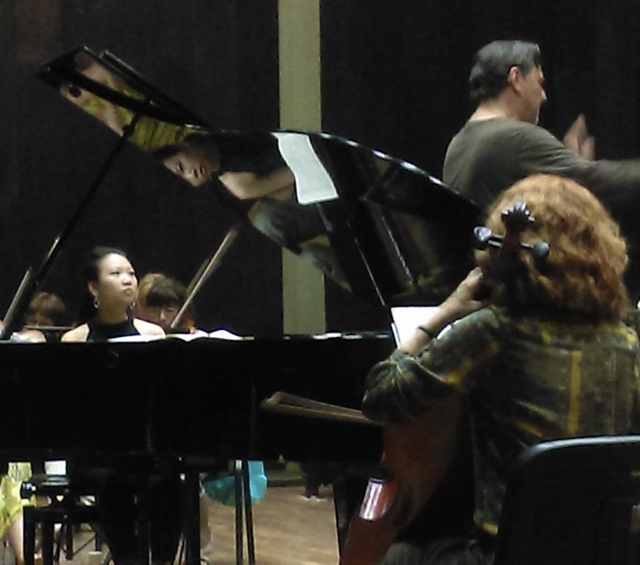

Dr. Kai-Li Ho made her professional solo debut at the age of 6 at Taiwan’s National Concert Hall and has since captivated audiences across the United States, Asia, and Europe. Dr. Ho was sought out by the Taiwanese government to perform at the Taiwan Art Vision Festival. She also received an invitation as a Grand Prize winner of The Metropolitan International Piano Competition to perform at the Weill Concert Hall of Carnegie Hall in New York.
Dr. Ho has garnered numerous accolades throughout her career, including First prize at the MTNA International State Piano Competition, First Prize at the Kawai International Piano Competition, Grand Prize at the 7th Taiwanese Chapter of the Peabody Institute of The Johns Hopkins University Alumni Society, “Best Performance of Taiwanese Repertoire” at the Young Musician International Competition- Citta di Barletta, Second Prize at the Taiwan National Piano Competition, and Third Prize at the Virtuoso and Bel Canto Music Competition in Italy. Furthermore, she was selected as one of the top ten pianists to participate in the Ninth Moscow International Frederick Chopin Competition for Young Pianists.
Dr. Ho’s dedication to her craft has led her to participate in renowned summer music festivals worldwide such as The Colburn Piano Festival in Los Angeles, Art of the Piano Festival at Cincinnati Conservatory of Music, Engadin International Piano Festival in Switzerland, Donghai University Music Festival in Taiwan, MCL Summer Music Festival in Chicago, and Virtuoso and Bel Canto Music Festival in Italy. Additionally, she had the privilege of being chosen as a piano intern for the Castleman Quartet Program in Fredonia, Upstate New York, and a Collaborative Pianist, Vocal Coach, and Choir Pianist at the Interlochen Center for the Arts in Interlochen, Michigan. Dr. Ho has appeared with orchestras including the Orchestre des Champs-Elysees, the Colburn Academy Virtuosi Orchestra, the National University of Singapore Orchestra, and the Vidin State Philharmonic Orchestra. Throughout her studies, Dr. Ho has had the opportunity to learn from esteemed musicians such as Leon Fleisher, Jerome Lowenthal, Boris Berman, Arnold Steinhardt, Meng-Chieh Liu, Seymour Lipkin, Ning An, Roger Vignoles, and Matti Raekallio, attending their piano and chamber music masterclasses.
Dr. Ho’s commitment to imparting her passion and expertise in music has merited her several invitations. Notably, she got invited as a Guest Artist at the University of Maryland, Baltimore County, where she conducts masterclasses, offers lessons, and provides chamber coaching. Additionally, her reputation has led to her invitation as a judge at the Federation of Music Clubs, Young Artist Auditions, and the Piano Star International Competition. Beyond her institutional affiliations, Dr. Ho extends her teaching endeavors by offering private instruction to students from different ages, catering to both in-person and online formats.
Raised in Kaohsiung, Taiwan, Dr. Ho received a full scholarship studying at The Colburn School at Los Angeles. Subsequently, she was awarded another four-year full scholarship for her Joint Honors Bachelor of Music in Piano Performance, conferred by Yong Siew Toh Conservatory of Music, National University of Singapore, and The Peabody Institute of The Johns Hopkins University. She further obtained both her Master of Music and Doctor of Musical Arts in Piano Performance at the age of twenty-eight at The Peabody Institute of The Johns Hopkins University, where she was the recipient of the Peabody Career Development Grant and the Clara Ascherfeld Award. Throughout both her Master’s and Doctoral studies, she has been offered Full Assistantships, which enables her to collaborate extensively with professors, instrumentalists, and vocalists under the tutelage of Marian Hahn, pupil of Leon Fleisher. Dr. Ho currently resides in Chapel Hill, North Carolina where she teaches and performs around the Triangle Area.